Key Takeaways
- Controls the Windows Media Player desktop shortcut.
- Enabled: Users cannot add the shortcut.
- Disabled: Users can add the shortcut.
- Not Configured: Users can choose whether to add the shortcut.
Hey, let’s discuss how to keep user desktops clean by locking Windows Media Player Shortcuts using Intune. This policy setting allows you to prevent a shortcut icon for Windows Media Player from being added to the user’s desktop. If you enable this policy setting, users cannot add the Player shortcut icon to their desktops.
Table of Contents
Keep User Desktops Clean by Blocking Windows Media Player Shortcuts using Intune
If you disable or do not configure this policy setting, users can choose whether to add the Player shortcut icon to their desktops. This allows users to decide if they want the Windows Media Player shortcut to appear on their desktop.
How to Create a Policy
To create a new policy, first sign in to the Microsoft Intune Admin Center. Then, click Devices from the left menu and select Configuration. After that, click Create and choose New Policy to start creating a new policy.

Profile Creation
After selecting New Policy, a dialog box will open where you need to choose the Platform and Profile Type. Set the Platform to Windows 10 and later and select Settings Catalog as the Profile Type, then click Create to proceed.

Basic Tab for Name and Description
In the Basics tab, enter a name for the policy and add a description. The policy name is required, while the description is optional. Here, I gave the policy name(Prevent Desktop Shortcut Creation) and description(To Enable Desktop Shortcut Creation Policy). Click Next to continue.
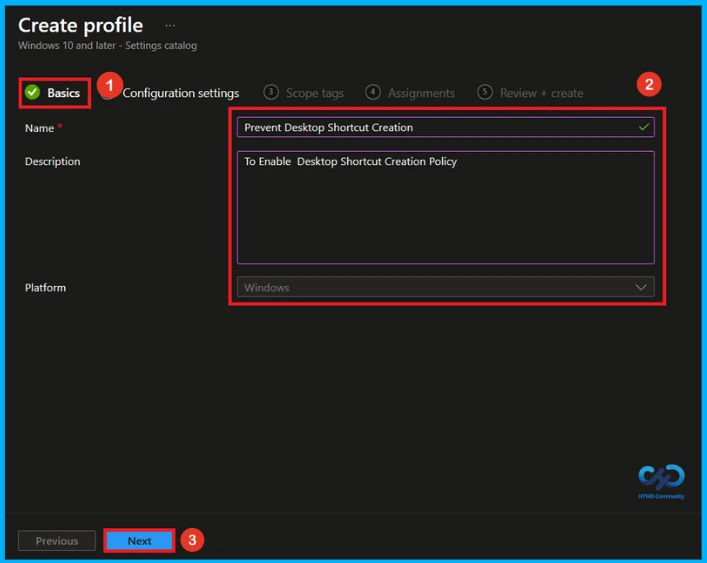
Configuration Settings
Click the + Add settings button shown in blue. After clicking it, the settings picker will open. From there, select Administrative Templates\Windows Components\Windows Media Player to view different policy options. Then choose the policy named Prevent Desktop Shortcut Creation.
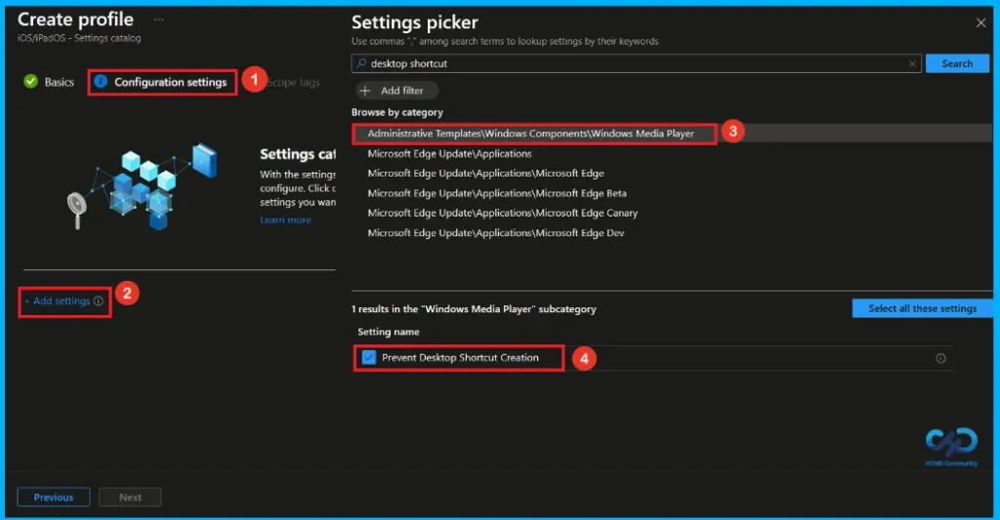
Default Settings of Desktop Shortcut Creation policy
After closing the Settings picker, the policy will be displayed. By default, the Prevent Desktop Shortcut Creation is disabled. You can choose to enable or disable this policy setting. To proceed with disabling the policy, click Next.
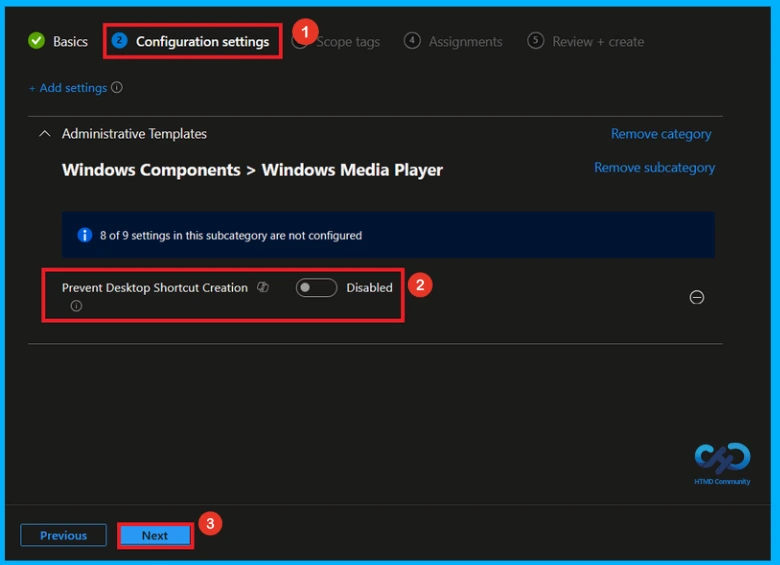
Enable Desktop Shortcut CreationPolicy
To enable the Desktop Shortcut Creation policy, turn on the setting by moving the toggle switch from left to right. This will activate the policy. After enabling it, click Next to proceed to the next step and continue the setup process.
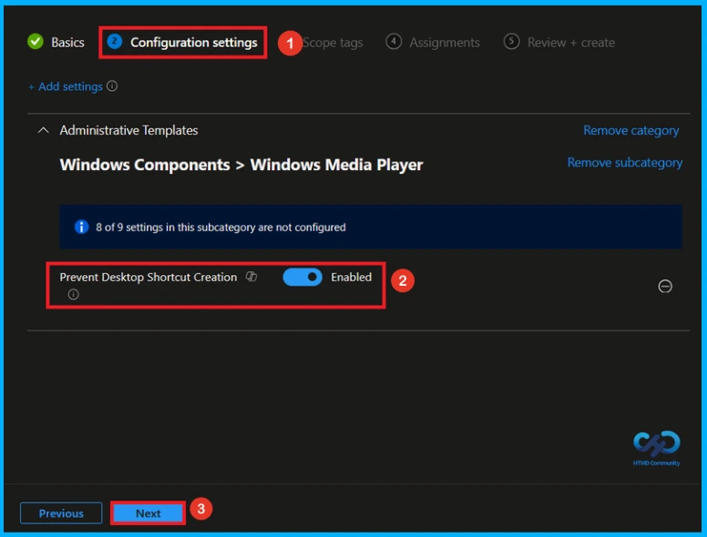
Scope Tag to Control Visibility
Scope Tag is not a mandatory step, it lets you control the visibility that means using this you can specify which admin can see and manage the policy. Since this is not mandatory, I would like to skip this step so click on Next.

Assignment Tab to Assign Group
In the Assignments section, click Add groups under Included groups and select the required user or device groups. Here, i selected the group HTMD – Test Policy and click the Next button to continue.
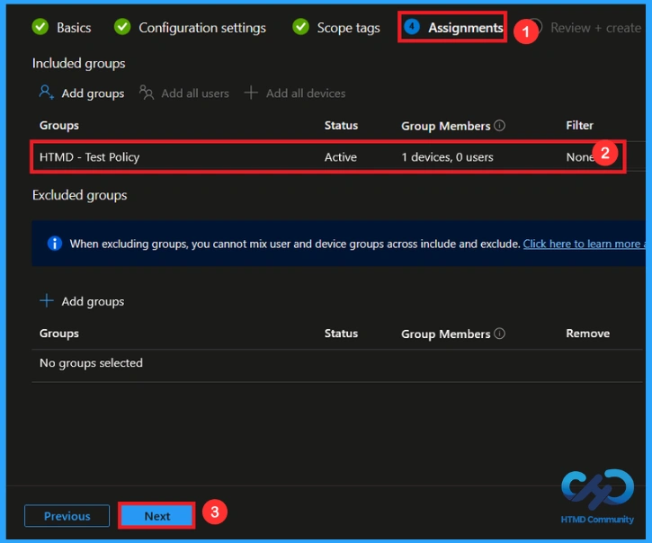
Review + Create Step
In the Review + Create tab, you can review a summary of all the information you entered earlier. This step allows you to verify each section to avoid any misconfiguration or policy issues. If changes are needed, you can go back using the Previous option. Once everything is correct, click Create to finish, and a notification will confirm that the policy has been created successfully.
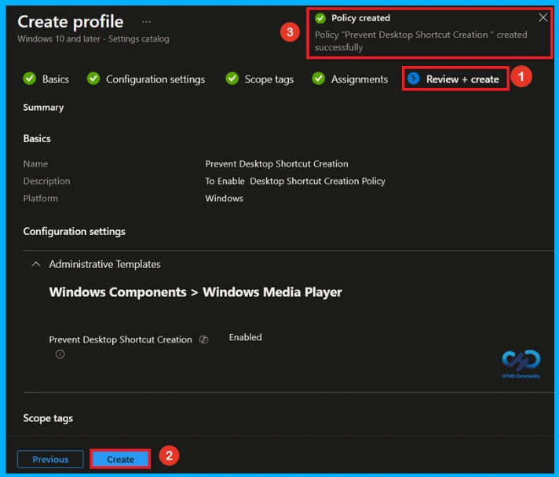
Monitor Policy Deployment Status
To verify whether the policy has been applied successfully, sign in to the Microsoft Intune admin center and navigate to Devices > Configuration profiles. From the list, select the Prevent Desktop Shortcut Creation policy. This will open the policy overview page, where you can view a summary of its deployment status.
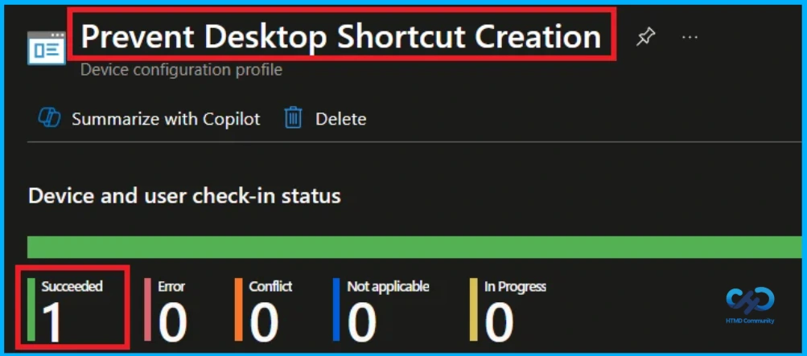
Client Side Verification
To confirm if a policy has been applied, use the Event Viewer on the client device. Go to Applications and Services Logs > Microsoft >Windows >Device Management > Enterprise Diagnostic Provider > Admin. From the list of policies, use the Filter Current Log option and search for Intune event 814.
MDM PolicyManager: Set policy strinq, Policy:(PreventWMPDeskTopShortcut) Area:
(ADMX_WindowsMediaPlayer), EnrollmentID requesting merge: (EB427D85-802F-46D9-A3E2-
D5B414587F63), Current User: (Device), String: (), Enrollment Type: (0x6), Scope: (0x0).
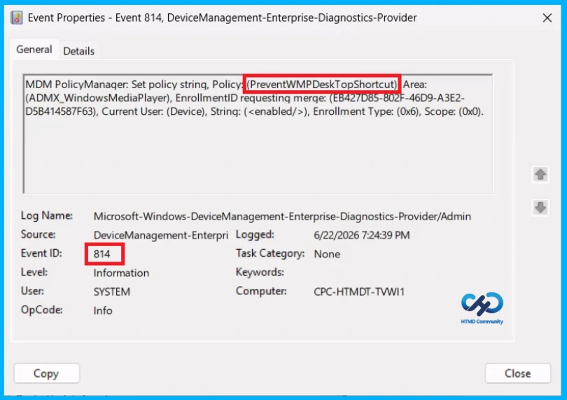
Configuration Service Provider (CSP)
The Policy Configuration Service Provider (CSP) is a feature used by organisations to manage and control settings on Windows 10 and 11 devices.
Description framework properties:
- Format –
chr(string) - Access Type – Add, Delete, Get, Replace
ADMX mapping:
| Name | Value |
|---|---|
| Name | PreventWMPDeskTopShortcut |
| Friendly Name | Prevent Desktop Shortcut Creation |
| Location | Computer Configuration |
| Path | Windows Components > Windows Media Player |
| Registry Key Name | Software\Policies\Microsoft\WindowsMediaPlayer |
| Registry Value Name | DesktopShortcut |
| ADMX File Name | windowsmediaplayer.admx |
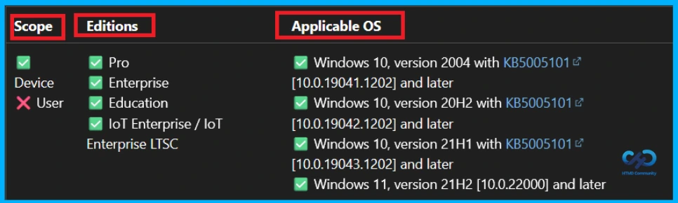
How to Remove Assigned Group from this Policy
If you need to remove a group from a policy assignment for security updates. Open the policy from the configuration tab and click on the edit button. Then, click on the Remove button. Click Review + Save after making the changes.
For detailed information, you can refer to our previous post – Learn How to Delete or Remove App Assignment from Intune using by Step-by-Step Guide.
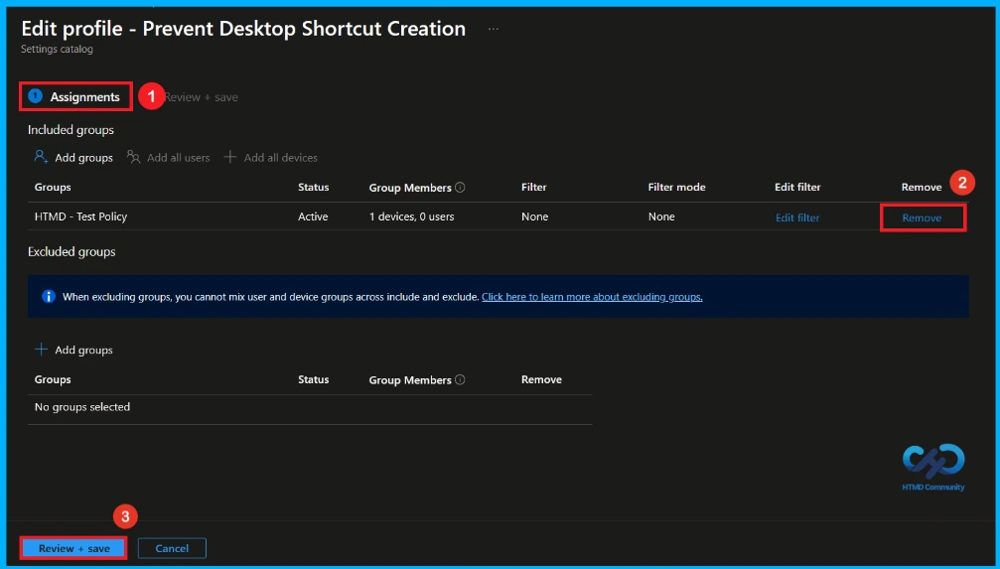
How to Delete this Policy from Intune
To delete this policy, go to the Devices>Configuration and then search for the policy using its name. Then your policy will appear on the screen. Click on the 3-dot menu and select the Delete option.
For more information, you can refer to our previous post – How to Delete Allow Clipboard History Policy in Intune Step by Step Guide.
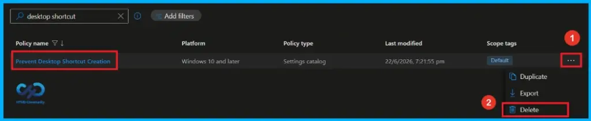
Need Further Assistance or Have Technical Questions?
Join the LinkedIn Page and Telegram group to get the latest step-by-step guides and news updates. Join our Meetup Page to participate in User group meetings. Also, join the WhatsApp Community and the Whatsapp channel to get the latest news on Microsoft Technologies. We are there on Reddit as well.
Author
Anoop C Nair has been Microsoft MVP from 2015 onwards for 10 consecutive years! He is a Workplace Solution Architect with more than 22+ years of experience in Workplace technologies. He is also a Blogger, Speaker, and Local User Group Community leader. His primary focus is on Device Management technologies like SCCM and Intune. He writes about technologies like Intune, SCCM, Windows, Cloud PC, Windows, Entra, Microsoft Security, Career, etc.